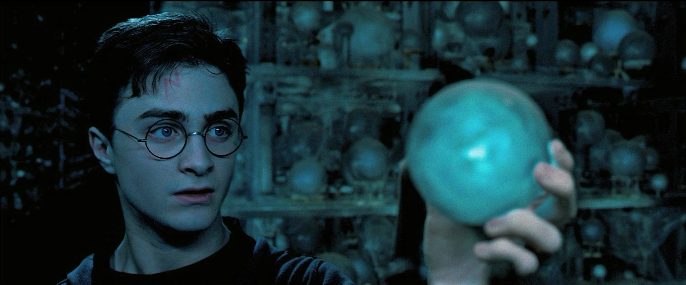
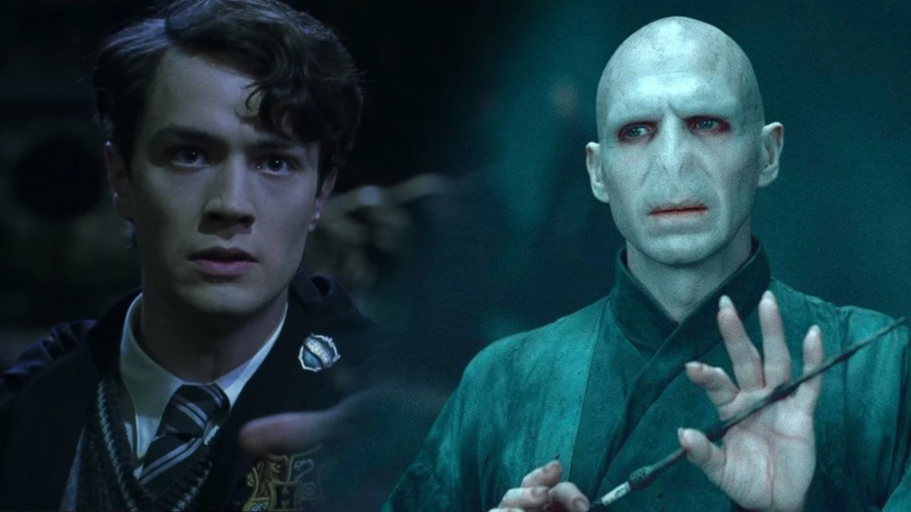
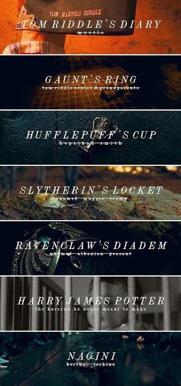
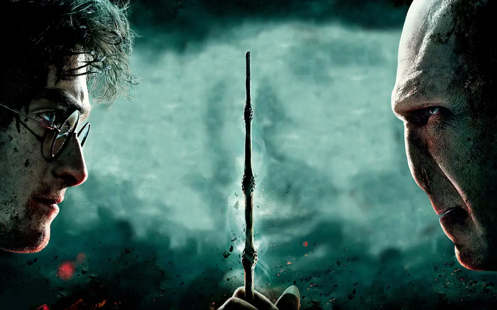
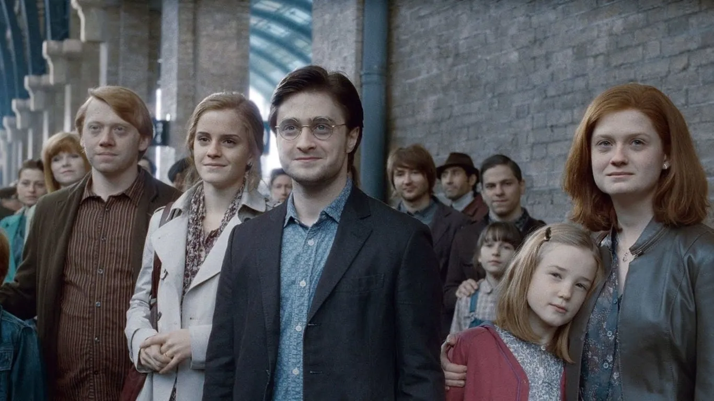

El Origen de la Rivalidad

La Profecía y el Destino
La profecía hecha por Sybill Trelawney fue el inicio del destino compartido entre Harry y Voldemort. Su contenido es el siguiente:
"El único con el poder de vencer al Señor Tenebroso se acerca... nacido de los que lo han desafiado tres veces, nacido al concluir el séptimo mes... y el Señor Tenebroso lo señalará como su igual, pero tendrá un poder que el Señor Tenebroso no conoce... y uno de los dos deberá morir a manos del otro, pues ninguno de los dos podrá vivir mientras el otro siga con vida... el único con el poder de vencer al Señor Tenebroso nacerá al concluir el séptimo mes..."
Esta profecía marcó a Harry como el enemigo de Voldemort y desencadenó los eventos que llevaron a su enfrentamiento final.
El Ascenso de Voldemort

De Tom Riddle a Voldemort
Tom Riddle nació como huérfano, pero su habilidad mágica excepcional lo llevó a Hogwarts. A medida que se sumergía en la magia oscura, se transformó en el temido Lord Voldemort, el mago más oscuro de todos los tiempos.
Los Horrocruxes: La Clave para Vencerlo

El Secreto de la Inmortalidad
Voldemort creó varios Horrocruxes para dividir su alma y alcanzar la inmortalidad. La destrucción de estos Horrocruxes fue fundamental para que Harry pudiera derrotarlo finalmente.
La Batalla Final: Harry vs Voldemort

El Último Duelo
En la Batalla de Hogwarts, Harry y Voldemort se enfrentaron cara a cara. La lealtad de las varitas de ambos cambió el curso de la batalla, y la magia de Voldemort se volvió contra él, asegurando su derrota.
El Legado del Elegido

La Paz Restablecida
Con la muerte de Voldemort, el mundo mágico se liberó del terror. Harry Potter se convirtió en un símbolo de esperanza, y su historia sigue siendo recordada como la de "El Niño que Vivió".